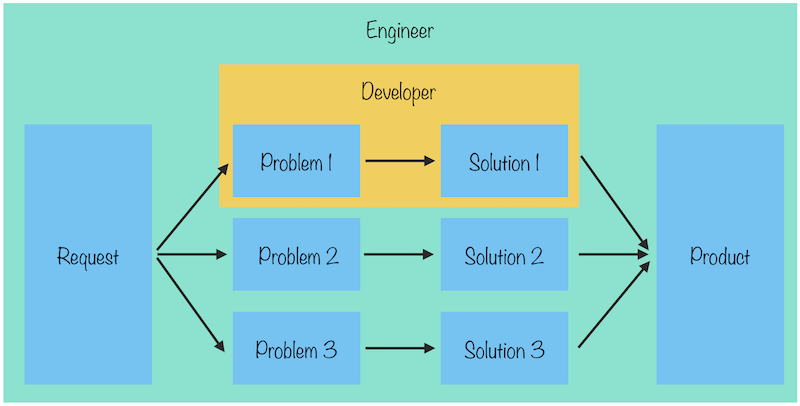

For convenience in the following, I'm going to copiously use "IC" to refer to individual contributors.
For product IC, I like to use these titles with these meanings:
Product Manager: The person who's in charge of figuring out what one or more product are supposed to be. They will communicate the state of the product and tell the story about why the end-user will love it. Their job is to make the product excellent.
Product Owner: An elevated role for a Product Manager, the Product Owner has a much broader discretion to drive the product to success. Product Owners act as mini-CEOs and hustle to get the product to the state it needs to be. They will take on more responsibility wherever the need goes.
Both can handle one or more products, but won't be in charge of a line-up. It is in management that the line-up supervision comes in.
A Senior Product Manager/Owner manages several people on top of the line-up these people handle.
For Product ICs to go up in management, they have to demonstrate:
The path up is only wider and a loose handling on these skills will have negative compounding effect on the future.
Industry knowledge is very important - and at times a superpower that can help with deficiencies - but doesn't replace the requirement for skills demonstration to go up in responsibilities.
As for pay structure, I prefer the use of levels to allow people to stay in the role that suits them the best and not implicitly push people up the ladder for compensation benefits. Don't cap compensation to please the ego of a superior. People should be compensated for their contribution to the company. If you have a leader who struggles with pay differences, change that leader.
Engineering IC roles, expectations and career paths is probably a topic that could yield its own book (again). I'll have to trim and focus to produce something that would be punchy and helpful.
Also, this is the Pirate Way; this likely won't apply to you if you parked your career in one of the trillion dollars resorts of Silicon Valley. If you're reading this from there, I will assume that this is fan fiction for you as you reminisce of a time your contribution meant something while toying with the golden handcuff we both know aren't coming off any time soon.
Years ago, I came to the realization that post-high school education for high-tech engineering was irrelevant to become a great engineer.
It's still a good environment for some to learn, but the speed at which the information evolves, the amount of content that exists online and the disconnect between academia and the real world is putting the value of this formal education in a tight box.
It actually can have a negative effect when students start believing that the label of their school will carry them their whole life. A label always does some heavy lifting - up until the point someone who's hungry for validation kicks your ass through sheer performance.
Regardless, as you enter your career as an IC, the biggest misconception is that you have been prepared to be ready to join a team. Unfortunately, you are not and were not told that the bulk of your engineering job isn't about producing, it's about thinking.
As an IC, I used to say to my peers that I am not paid to code, I'm paid to think. A weird concept before the world of gen AI and a middle management that overwhelmingly measures performances on commit count, but nevertheless true.
There is always someone (or something), somewhere that can produce cheaper. The job is to figure out how to build things correctly. How do you balance short term goals while securing long term ones. At first, - and for most - it reads like a paradox, and that's because all the years you've been taught how to code and/or cad, you weren't taught about this.
I'm sure there is exceptions to this, but I'm yet to see a curriculum which measures deliverables on their adaptability to future problems.
Now that gen AI is ubiquitous, you can easily identify those who don't get that producing isn't the core expectation of the job by listening to those who worry about being replaced, or by non-technical rejoicing at the idea of replacing engineers with AI. AI in the end, is the greatest asset to ever come, taking over the implementation and pushing you where you were always needed: thinking.
But because you weren't taught this, this is where your career should start.
Most companies end up using some level of a career ladder for two reasons:
It's not really the topic, but I'll use the format to be relatable - sliced with Technical and Management tracks - focusing on the IC part aka technical.
| Technical | Management |
|---|---|
| (Intern) | |
| Junior Engineer | |
| Engineer | |
| Senior Engineer | |
| * Lead Engineer | |
| Staff Engineer | Engineering Manager |
| Principal Engineer | Director of Engineering and Above |
As you start your career, you begin as a Junior Engineer. We don't call it like that because #feelings, but that's how everybody will see you and that's the qualifier that will be used in almost every conversation you're not part of.
We all started here, we all moved on - except of those who couldn't let that go. If you can't let go, if you're not comfortable with this reality, everything else is going to be a struggle.
Note: I'm skipping Intern on purpose because some people never do it and internships are basically paid interviews. You are being paid to work on a shits and giggle project to be evaluated thoroughly. Many interns don't understand how important this is and don't leverage the opportunity to make an impression and how lasting this impression will be. To this day I tell the story of good and bad interns I worked with; I am asked about how internships went for people I worked with.
As you progress in your skills, hitting the checklist of expectations the ladder laid out, you'll reach the level of lead engineer or whichever equivalent is where you are.
At this point, you will face a fork: Technical or Management route.
If you continue in Technical, you have more options that are going to be more or less interesting depending on the culture of your company. In my approach, the people who go deeper are hard core pirates and I like to continue work closely with them - even establish direct report lines to me as a C level exec to go after the craziest projects.
If you want to remember one thing, this is the TLDR expectations for the levels:
| Role | Debug | New Feature | Architect | Other |
|---|---|---|---|---|
| Junior Engineer | 80% Autonomous | 20% Autonomous | NA | NA |
| Engineer | 100% Autonomous | 60% Autonomous | Suggestion Capable | NA |
| Senior Engineer | 100% Autonomous | 100% Autonomous | 40% Autonomous | Release Engineering |
| Lead Engineer | 100% Autonomous | 100% Autonomous | 80% Autonomous | Above plus: Capable to lead a group to a resolution of a technical problem |
| Staff Engineer | Silver Bullet | Silver Bullet | 100% Autonomous | Above plus: Represent team; Prototyping; Proficient in multiple tech stacks |
| Principal Engineer | Silver Bullet | Silver Bullet | Silver Bullet | Above plus: Evangelism; Deep R&D; Tech Strategy |
Another way to paint the picture is this:

A developer is an engineer who can only handle solving a well framed problem. An engineer is someone who can handle the unknown chain of problems, their solutions and collective structure into a product feature or whole product at once.
Junior engineers and engineers are mostly developers.
As you come in, we're giving you work to evaluate you. Debugging is a great place to do this. You can show what you're made off in a controlled environment while learning the things your education didn't cover. You're deep in team work land, have a lot to grasp - which has a significant cognitive load - and you work in hyper focused environments so you aren't yet swimming in context switching waters.
What a good manager will pay attention to is: 1. Discipline - how meticulous are you with what you do? Are you implementing tests, documentations? Are your side work thorough or bare minimum? 2. Range - how far out of your comfort zone are you going to solve the problem? 3. Limits - where did you stop and why? How much are you affected by obstacles? Do you stay very clear of them or are you plowing through them? 4. Independence - how much assistance do you need for anything? Are you searching on your own? How much have you tried before asking for help? Did you need anyone to help you get help?
As you can probably tell a lot of these are metrics around autonomy. That's because no one is hiring an engineer to spoon-feed them the next steps. Everybody wants to through high level problems and see them being sorted.
As you demonstrate you can handle yourself with small things, bigger things will come your way. Usually outside of bug fixing. Bugs like features have their own scale of difficulty, it's not the "dish washing" of the engineering world. It will come back when you can demonstrate you can do more complex things on your own.
And when bigger things will be comfortable for you, the promotion will come.
As a mid level engineer, your responsibility increase towards handling new development on your own. As you start entering this realm, the question of integrating it into existing structure is creating a force function that pushes you into architecture considerations. In this vice, your options - to figure it out - comes down to balancing: 1. Knowledge you'll find online 2. Your more senior peers insight 3. Your own exploration and understanding of the current situation, its technologies and how they work.
Regardless, this is the time when you should invest a lot of your time research, trying and validating assumptions.
Bad engineers here tend to read some blog post and implement as-is without any questioning, testing or validation. This is almost always caught by more senior engineers and management, but the lack of counter makes these bad engineers think that they either got away with it or that they were right all along; when in reality, it's just another instance of picking your battles.
If you do the work, it will show. Your answers will be sharper, your implementation will show their strength in future development, you will find yourself engaging at eye level with more senior peers.
When this comes, you will be ready for your next promotion.
If the selfish interests of the employer were to be fulfilled, teams would be packed with senior engineers.
This is because this is the level that usually gives the best bang for buck.
At this level, you're now autonomous in 90% of the cases, you can take on architecture designs, you can debug complex problems; you are basically effective with a high level direction.
You know when to do the work, when to ask questions - and they are good questions -, when to kick off a whiteboard session, how to break down a problem, etc.
Senior engineers get all the best tasks because they can handle it.
Eventually - whether you realize it or not - someone will start noticing your contributions. Either directly or by proxy, your name is mentioned as the team is being evaluated.
This is why it's important that you communicate what you want to your manager, and that you appreciate that there is more than one happy path for you.
As you develop your skills, you can easily find yourself in a position where you wonder what's next. There is the obvious path up towards Lead engineer, but you can just as well stay as Senior and continue increase your compensation beyond the minium 'cost of living' raise. This does require a company that understand the value a good employees at this level, and it's far from ubiquitous, but it's nonetheless a good outcome that can be created by simply stating you like this level and just wants to be rewarded for ongoing contributions.
It's not the topic of this chapter, so I won't dive deeper into this and move on to the other path: Lead engineer.
As you become the domain expert through skills and demonstration of said skills, you can be called upon to increase the autonomy you have by taking higher level problems and solve them. When you do that, you'll be called to coordinate with bigger groups and your ability to demonstrate leadership is what's between you and your next promotion.
As a Lead Engineer, the expectation is for you to drive fundamentally two things:
1/ The technical aspect
You are the domain expert in at very least one tech stack. You are the go-to person to answer predictive questions: "Should we use X or Y to do Z?". In this position, you not only have experience (prior first-hand knowledge) but you also keep yourself sharp on what could be a paradigm shift. As such, you not only drive technical decisions in your team, you represent your team's responsibility in cross-functional work (crossfunc for short later).
This means that when an external stakeholder wants to build something else that will interact with your piece, you can answer almost all the time, on the spot, what will be the best course of action.
This experience also makes you the person to drive R&D work.
This needs clarification because I've seen too many teams throwing stuff at the wall and calling it R&D.
The difficulty of R&D - that you will handle - is to know what to start and what to stop. R&D can very easily be a slippery slope that fuel the emotional biases that create a feedback loop that yields nothing productizable (and therefore commercializable) and bankrupts the company.
To be able to do this, you leverage a mix between your experience, your gut feeling, soft skills and own involvement to validate carefully selected assumptions that you have laid out - at least in your mind - into a plausible chain of milestones that would ultimately yield something. You are also able to adjust the entire picture in the light of new elements in quasi real time.
2/ The people aspect in a precise context
Since you are the technical expert, you are defacto placed in a group effort most of the time. This means you need to be able to drive this group to a resolution. You are capable of being tactical not necessarily strategic with this team, focusing on bringing impact to the goal set.
You are capable of understanding people's technical strengths and shortcomings. You don't necessarily know how to address them, but this is a problem you can take with your manager.
Because you can handle these two domains, you are facing the biggest fork of your career: You can continue developing your skills in either areas.
If you decide to go deeper in the people aspect, move to the manager part of this role. Just know that you're going into a different track for a different expectation. Going into management is about broadening the picture of the work you do. If you want to increase the horizontal cover of what you will work on, this is the right track. This track is 100% about team work. Your main job will not be to deliver features, it will be about building the team and further down the organization that delivers. The wins will be your teams, and you'll have to satisfy yourself with the realization that you just coordinated this group of people to get to the finishing line.
If you'd rather go deeper vertically, then the tech track is probably better suited.
If you decide to go deeper in the tech, what comes after is what's relevant to you, but to trigger it, you need to demonstrate the next level. Pass this point, you are entering the legend territory. Engineers that plow through insane problems like it's nothing. To most other engineers, what they do is voodoo.
You have to become the silver bullet, the ace in the deck that is to be leveraged to the most complicated, unexplored, impactful issues the team and the company faces.
Going deeper into the tech track, your role evolves into unpacking garbage requirements. Not garbage because of the incompetence of the people who send it your way. Garbage because it's a pile of deconstructed thoughts with almost no structure to it.
This can be a hyper irreproduceable bug, a magic box system on a pcb, or a vehicle that's supposed to fly, swim and run.
Regardless, you are at such a level of width of domain and depth in each that you can compose on the spot a solution that will work 99% of the time.
When you design something, it is sophisticated out of the box, contains contingencies for executions surprises, clear milestones to push beta/validation points, has considered mid to long term expansions without having to commit to a long term effort to support speculative use cases. When you implement it, you are fast, tactical. Your work comes out clean on the first draft, works out of the box and covers all the side pieces (test, jigs, etc)
People like you are hard to come by, so you're trusted with the most impactful work and good managers will protect you and your time like the golden goose you are.
Because of the above, the mention of your name means shit is about to get real.
All of this is a double edge sword that is earned through an incredible amount of work, focus and dedication.
You may very likely report directly to a Director/VP of Engineering.
Staff Engineers on steroid, you are not only doing all of the above, you are the poster child of the revolution. You are sent to drive and influence industry level changes. You are an evangelist. If you were in another field of science, you'd be the nobel laureate.
You are likely to report to VPE/CTOs.
You may have noticed that I didn't use time as a reference for readiness to move up. That's because it's irrelevant. Companies vary dramatically from one to another. The specific project, the opportunity and the culture are all factors of how fast the pace will be. Your own commitment will dictate the pace even further.
You may achieve the goal in 6 months and your peer in 5 years. The levels aren't supposed to be reward for serving your time in a box. It's supposed to represent and simplify a level of performance and its expectations.
Prove that you can deliver, and you will have earned to move up.
Project as a function encompasses two roles: Project Managers (I put delivery inside Project) and Program Managers.
Seniority here is usually awarded as a thank you, but that's not how I like to use it. I prefer seniority as a mark of walking the managerial track.
Project managers are here to support the execution of one or more projects. Each projects isn't to be interdependent for execution because this would make it a program.
Project and Program are complementary and cover the two dimensional aspects of the coordination work. Program is horizontal (wide surface, shallow depth) while Project is vertical (deep in one domain).
Both require similar skill set to be executed correctly.
First, discipline and organization. Project IC have to be meticulous and organized. This is so essential that it's something you'd want to be almost a personality trait. In the past, I have made an interview room messy on purpose to see if it would bother project manager candidates. That's because you can't have a well organized project without at very least someone constantly pointing out what seems out of place.
Ideally, this person will be able to present fixes or execute them directly. This can be in the form of improving the process or working the process themselves directly. The more, the better, but you never want this to impact their oversight of the project.
Second, communication. Communication skills is a broad topic that lives in a venn diagram to be able to cover which part of communication needs to be mastered for the purpose and audience you're targeting. For this role, we need someone who's capable of being concise, structured while recurrently recapping what was said before. Repetition is very important here - while it can be bad communication in other areas.
The communication here has also a significant social/soft skill purpose. Most peers won't admit not knowing something, so it's important to communicate in a way that keeps a positive face for everyone by dressing the communication as an alignment rather than a blunt finger pointing.
Last, human skills. Being able to support a project means being able to establish the relationships that fluidify all execution. As a project manager, you're not here to force people to do the work. You're the canary in the mine. Everybody loves the canary as they should. Be lovable without losing the power of being respected when you identify a problem. As a Delivery manager, you must be able to exert a soft yet firm assertive push to get the team to move forward. You need mature leadership skills. As a Program manager, you must be adaptable, so you can work with different profiles of different departments in order to get the results out.
In all, you need to be confident, assertive and a soft leader. This is by far the most difficult part of a project role.
In the end, if you master all these skills, the secondary domain knowledge will rub against you and will be part of you just as much, but the rest of the team will look at you to coordinate the solution to unprocessed problems. This is where moving up comes. Either as higher level IC or onto management.
As a higher level IC, you'll be put in charge of more sensitive/complex projects/programs. As management, you'll be expected to replicate yourself - your way of working and its results.